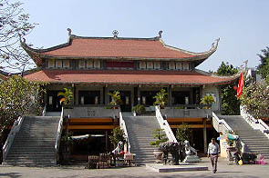
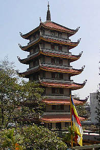
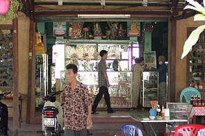
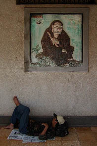
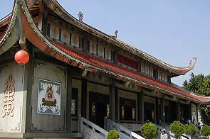
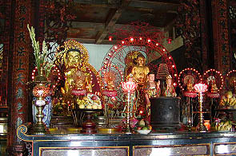
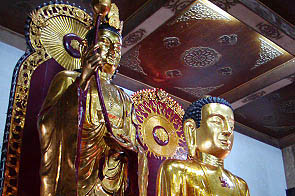
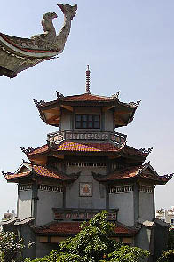

ChuaVinhnNghiem/T.P.HoChiMinh
永嚴寺/ホーチミン市
ホーチミン市で最も有名な寺のひとつ、永嚴寺。
多くの観光客が訪れるこの寺は日本に留学した僧がつくったそうな。

これが本堂。
境内は広く、ベトナムでもトップクラスの規模を誇る寺だという。
勿論入口にはバイタクのお兄ちゃんや線香売りのオバチャンなどがカモのお越しをてぐすねひいて待っている。

入って左手には七重の塔がある。ここも越南国寺と一緒で２階の部分にペディストリアンデッキがつくられていて、その階から1層２層・・・とカウントしていくので実際には8層だが七重の塔なのである。一階には土産屋が入っていて最初、いきなり塔の入口が売店かと思ってびっくりしたが、このスペースは塔の真下にはあるが塔とは無関係なのだ、ということに気付き納得した。
七重の塔は越南国寺同様、逓減率もへったくれもないプロポーション。というか四角いビルの途中に屋根付けときゃいいんだろ、的な建物。
で、参拝前に土産屋をチェック。
電飾仏像などが売られていて財布のヒモがユルユルっと弛みそうになるが仏像を背負っての参拝は新手の巡礼者と間違われて道行く人々に物凄く尊敬される可能性もあるので我慢しておく。
クリスタルと光ファイバーで妖しく光るオシャレ観音などはブルータスのインテリア特集あたりに登場するこじゃれ君の家などに無理矢理送りつけてやりたい位のアーバンでクールな逸品だった。
その他、仏教関連書籍や仏具など充実の品揃えでした。

塔に登ろうと本堂前の階段を登りペディストリアンデッキから七重の塔の初層（土産屋の上）に行く。
塔の扉は閉まっており家なき子の方々が達磨大姉に見守られながら昼寝をしてました。
確かに街中の割には静かなので昼寝にはもってこいの場所に思える。
塔に登らせてくれるようにお寺の人に頼もうと思ったが、近くに寺の人がいなくて面倒臭くなってしまったので登りませんでした。

で、本堂。
コンクリート造の建物だが決して安普請ではなく名刹っぽさが漂っている。
中は広々としており外よりは涼しいのでホッとする。
内陣では本尊の前で家族が座っていて坊さんにお経を唱えてもらっている。日本でいったら法事のようなものなのだろうか。
 
他の寺にあるような市販の光背（？）ではなくオリジナル電飾光背。なんかグルグル回りそうな感じ。
本尊は5〜6メートル位の立派な仏像なのだが、顔がおっさん臭い。別にいいんですけど。
ココの仏像は金の仏像が多く、ペンキ塗りニス仕上げの公園の遊具のような仏像は少なかった。
どちらかというと中国や日本の寺を意識した雰囲気が漂っていた。

本堂の裏にはやけにカッコいい建物が建っている。
納骨堂であった。
ベトナムの寺には大体納骨堂があったようだがここのものは特に立派だった。
次へいきましょう
越南珍寺劇場
珍寺大道場 HOME